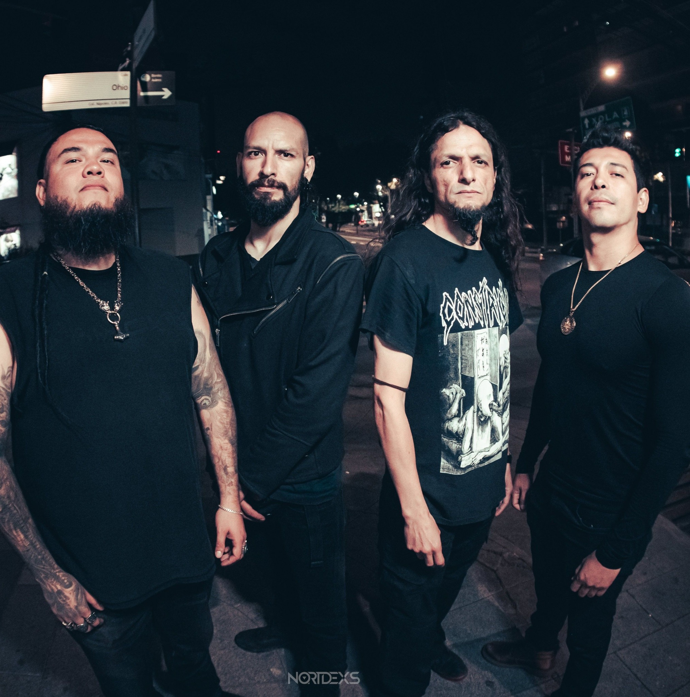

[E]l oriente de la CDMX se prepara para recibir una de las jornadas más intensas de la resistencia musical. El mítico Vikings Rock Bar celebra nueve años de historia con el "Gran Noveno Círculo", un evento que este sábado 28 de marzo activará un portal sonoro donde el metal, el ska y el rock alternativo convergerán en una experiencia sensorial sin precedentes.
Presentado por Atico Room Producciones y Ruina Sonoras, el cartel destaca por su mística y diversidad técnica. La agrupación Inoxia liderará la carga con su metal progresivo de tintes sumerios, acompañados por la energía explosiva de Deskiziados Ska y Los Espectros de tu Jefa. La conciencia social llegará de la mano de Radio Obrera Antifa, colectivo con más de dos décadas de trayectoria en la lucha cultural.

La descarga se completará con los riffs pesados de Mordlaw y Kuapelech, sumados a la adrenalina de Killer Toy Rock y Karambola 7. Más que un concierto, esta celebración marca la consolidación de un recinto que, durante casi una década, ha servido como bastión indispensable para las bandas independientes en el Templo del Rock de la Juan Escutia.